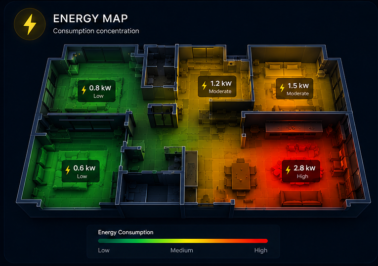
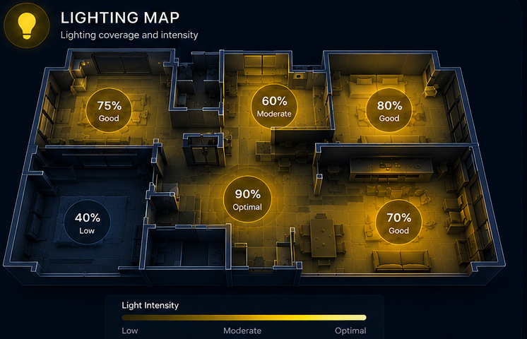
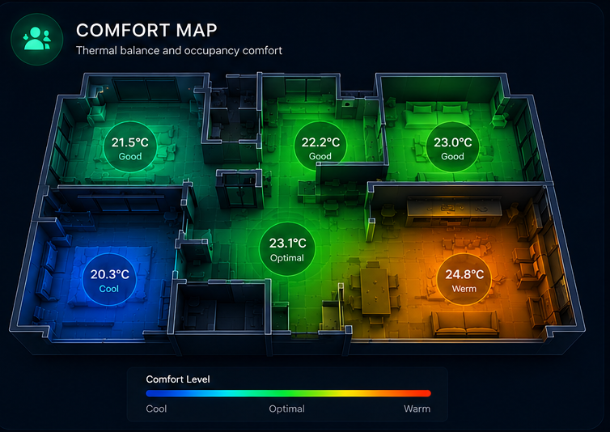
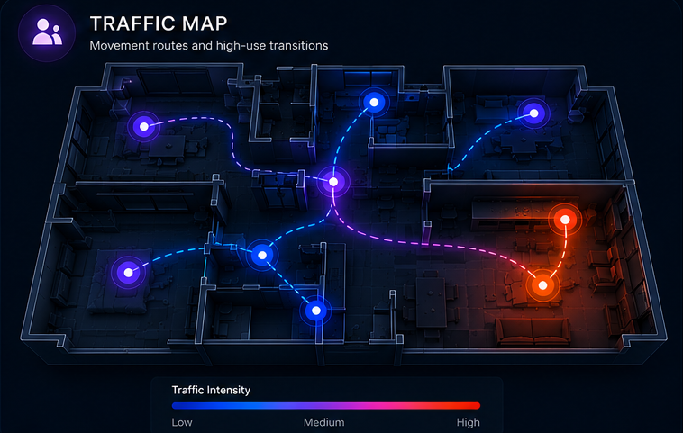

Unclear buying decisions
The final experience is difficult to visualize before installation.
A simulation-first platform that turns property blueprints into interactive, commerce-ready digital twins—before a single device is installed.
Customers must make expensive decisions from drawings and technical bills of materials. Planning, purchasing, commissioning, and support remain disconnected.
The final experience is difficult to visualize before installation.
Sales tools, design tools, hardware configuration, and support do not share one model.
Fault diagnosis, upgrades, and system history lack a persistent visual context.
Upload PDF, JPG or PNG blueprints; scan physical context with AR.
Convert plans into a layered, navigable 3D digital twin.
Browse and place smart services directly inside the model.
Test layouts, controls, heatmaps, lightmaps, AR and VR.
Connect the deployed environment for monitoring and support.
A shared visualization and commerce layer, tailored to each environment.
4K video · energy meters · HVAC · multi-zone audio · lighting & shading · security · geo-fencing
Power management · smart lighting · digital signage · surveillance · interactive access
Traffic · waste systems · water monitoring & control · smart street lighting
Motorized displays · monitored cloud services · marine audio · communication
Guest room management · digitized nursing · lighting management · automated pro audio
Create an authenticated personal workspace and property profile.
Upload the blueprint, inspect the generated property, activate services, compare cost, and continue to implementation—all inside one workspace.
AI-assisted processing interprets source files and produces a floor-by-floor environment for rendering, object placement, movement, and simulation in a game-engine workflow.
STRUCTURED PROPERTY DATA
Scan or photograph the real home to position objects and references more accurately.
Mobile-connected controller plus a gamepad for a lower-cost immersive setup.
Full headset and controller package for room-scale, placement, and comfort validation.




The platform supports service discovery, compatibility guidance, deposits, maintenance fees, and escalation to human IT support.
The gateway reduces unnecessary requests, protects the core platform, and enables live synchronization as an additional subscription service.
A small tunneling service remains closed by default. With user approval and the correct encryption key, support can temporarily reach a controlled port in the Crestron-side environment.
Store blueprint and twin versions for rebuilds, rework, phased construction, upgrades, and deployment comparisons.
Authenticate accounts, validate subscriptions, filter traffic, encrypt tunnels, and enforce role-based support permissions.
Message-broker updates feed a database so engineers can inspect state, events, approved code updates, and configuration changes.
Customers see the expected result before buying.
Services are tested in a realistic spatial model.
Sales, engineering, and support share one context.
The live system is monitored, versioned, and diagnosable.
AR, VR, and interactive simulation make choices tangible.
Homes, villas, yachts, city assets, and commercial spaces.
Digital Com connects purchase decisions to technical implementation—and keeps the relationship alive through monitoring, support, and upgrades.